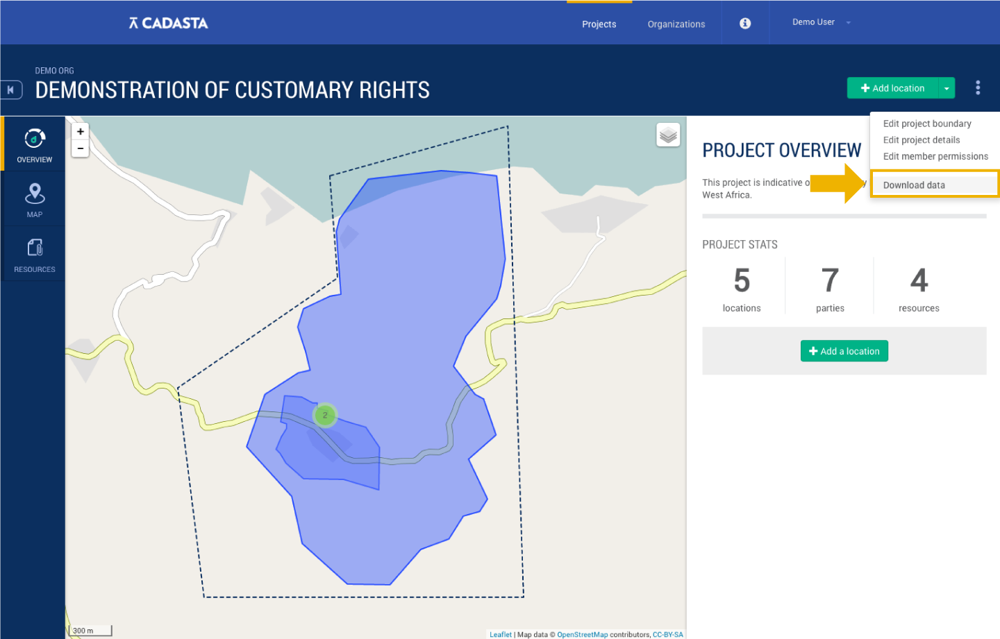
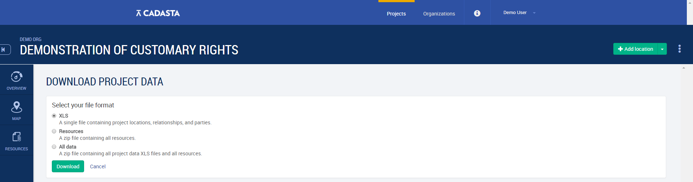

Downloading Data
At some point during the project, you may need to download your data - perhaps for analysis using third-party software, creating a localized backup, or migrating data to another platform.
The Cadasta Platform makes this a relatively straightforward process.
From the project overview page, select the three-dots menu at the top right. Then select Download data.

Next, select your desired file format:
- SHP - a .zip full of shape files for your project locations, relationships, and parties;
- XLS - details of the locations, relationships and parties as an XLS file;
- Resources - a .zip file containing all project resource files (images, videos, audio and other associated files); or
- All data - a .zip file containing both the details of all locations, relationships and parties as well as the resource files. 
Finally, select Download and the file will begin downloading.